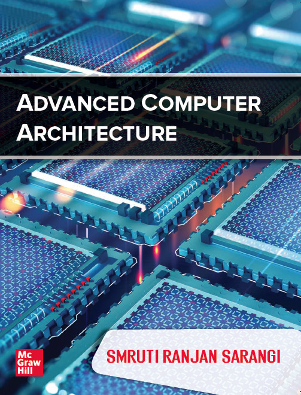
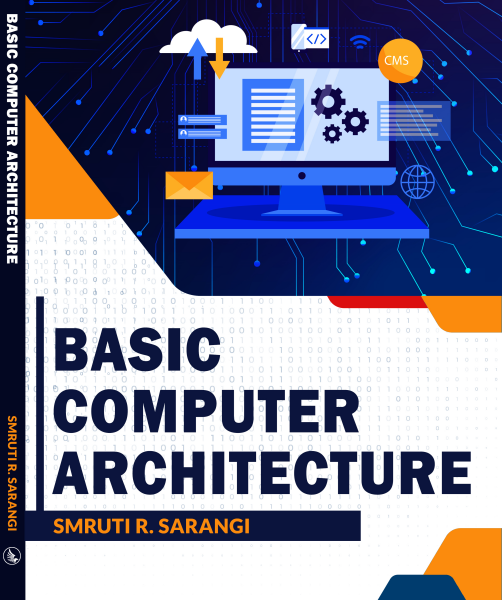

Version 1.0 of the book Publisher: McGrawHill  |
Buy version 1.0
|
Version 2.0.
|
Download the pdf of version 2.0 of the book for free (CC-BY-ND 4.0 license). New name: Next-Gen Computer Architecture: Till the End of Silicon |
| Join the Google group for discussing concepts, sharing doubts, and for getting tips from other computer architecture enthusiasts. |
First part of this two-book
series
|
 |
| Slides |
YouTube Videos (click the
|
| Chapter 1:
Introduction |
1. Introduction |
| Chapter 2: Out-of-order pipelines |
1. Summary of in-order
pipelining 2. Motivation for out-of-order pipelining 3. Register renaming and precise exceptions |
| Chatper 3:
The fetch and decode stages |
1. Fetch logic. 2. Branch prediction 3. Decode stage Notes on operating systems: [pdf] |
| Chapter 4:
Issue, execute, commit |
1. Instruction renaming 2. Wakeup, select, and broadcast 3. Load store queue 4. Instruction commit |
| Chapter
5: Alternative approaches to issue and commit |
1. Aggressive speculation 2. Replay schemes 3. Compiler based techniques 4. VLIW and EPIC processors |
| Chapter 6: Graphics
Processors |
1. Traditional graphics pipeline 2. The CUDA programming language 3. Design of GPGPUs |
| Chapter 7:
Caches |
1. Overview of caches 2. Cache optimizations and virtual memory 3. SRAM and CAM arrays 4. Cacti tool, Elmore delay 5. Advanced cache optimizations 6. Trace caches, instruction, and data prefetching |
| Chapter 8:
NoC |
1. Network topologies and basic concepts |
| Chapter
9: Multicore Systems |
1. Parallel programming and hardware
threads 2. Theoretical foundations 3. Sequential consistency, PLSC, and coherence 4. Execution witnesses, access graphs, causal graphs 5. Cache coherence: snoopy and directory protocols 6. Advanced directory protocols and atomic operations 7. Memory models and data races 8. Methods to detect races 9. Transactional memory |
| Chapter 10: Main Memory | 1. DRAM devices and arrays |
| Chapter 11: Power and Temperature | 1. Dynamic and leakage power |
| Chapter 12: Reliability | 1. Soft errors and inductive noise 2. Non-determinism and design faults 3. Process variation, ageing and hard errorrs |
| Chapter
13: Secure Architectures |
1. Cryptographic fundamentals and encryption |
| Chapter 14:
Architectures for ML |
1. Basic ML Concepts |
| CXL | <the videos will be uploaded soon> |
Tejas
Architecture Simulator -- Can be used to simulate the
behaviour of simple and complex multicore
processors including their pipelines, memory hierarchies, and
NOCs. The simulator can also run in parallel,
simulate GPUs, and simulate energy consumption. The latest
version supports the ARM and RISC-V
ISAs. Written by the SRISHTI
group